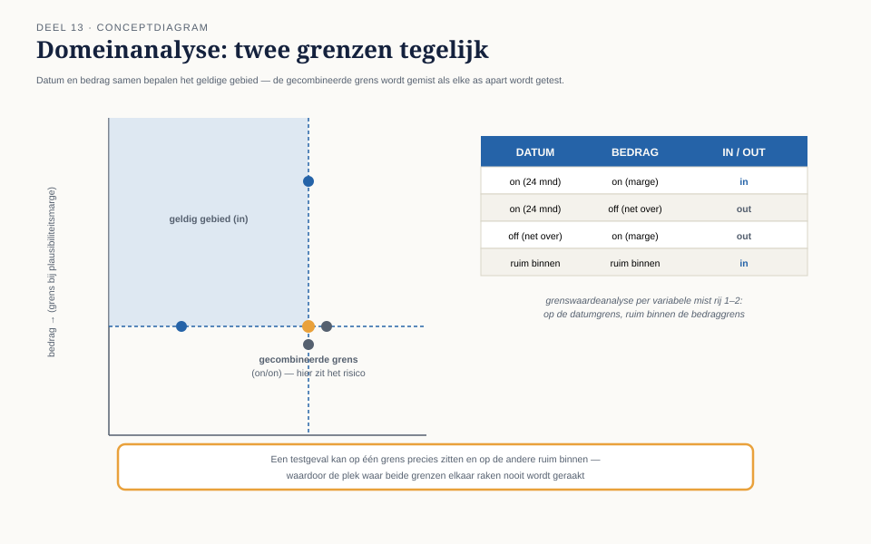

Deel 13 — Testanalyse gevorderd
Reader · Ductus-cursus Testen en Kwaliteitsborging · niveau 2 (professional) · deel 13 van 30
Leerdoelen
Na dit deel kun je:
- pairwise-technieken toepassen om combinatorische explosie hanteerbaar te maken;
- domeinanalyse toepassen wanneer meerdere grenzen tegelijk een testgeval bepalen;
- testcondities afleiden uit een onvolledige of tegenstrijdige testbasis;
- user stories met acceptatiecriteria beoordelen op toetsbaarheid en er testcondities uit afleiden;
- de keuze tussen volledige combinatorische dekking en pairwise beargumenteren vanuit risico.
Studielast: één dagdeel klassikaal, circa drie uur zelfstudie.
1. Zestien regels, en dan een vijfde conditie
In niveau 1, deel 5 bouwde je een beslissingstabel met drie condities en acht regels voor de mutatieverwerking. Bij het Mutatieplatform zijn het er, voor de volledige verwerking, zeven: ingangsdatum (verleden/heden/toekomst), regelingstype (verzekerd/fonds), plausibiliteit (ja/nee), bronkanaal (portaal/salarisverwerker/bestand/telefonisch), deelnemerstatus (actief/slaper/gepensioneerd), mutatiesoort (salaris/deeltijd/adres) en werkgeversgrootte (klein/middel/groot).
Zeven condities met gemiddeld twee tot drie waarden geven al snel meer dan duizend combinaties. Niemand — geen enkel team, geen enkele planning — kan dat volledig uitschrijven en testen.
Kernzin — Volledige combinatorische dekking is geen ambitieuze keuze maar een onmogelijke, zodra het aantal condities een handvol overschrijdt. De vraag is niet "hoe testen we alles" maar "welke representatieve subset dekt het risico dat we willen afdekken".
2. Pairwise-technieken
2.1 Het idee
De meeste afwijkingen die door een combinatie van condities ontstaan, worden veroorzaakt door de interactie tussen twee condities — zelden door een interactie tussen vier of vijf tegelijk. Pairwise-testen (ook wel paarsgewijs testen) kiest een minimale set combinaties die garandeert dat élk paar van waarden van élke twee condities minstens één keer samen voorkomt, zonder alle combinaties van alle condities te hoeven testen.
2.2 Een klein voorbeeld
Drie condities met elk twee waarden geven acht volledige combinaties. Een pairwise-set voor dezelfde drie condities heeft doorgaans maar vier regels nodig om elk paar minstens één keer te dekken.

Bij de zeven condities van het Mutatieplatform reduceert pairwise het aantal benodigde testgevallen van ruim duizend naar enkele tientallen — een reductie die volledige combinatorische dekking praktisch onhaalbaar en pairwise juist haalbaar maakt.
2.3 Wat pairwise wint en wat het opoffert
Pairwise vindt vrijwel alle afwijkingen die uit een interactie tussen twee condities ontstaan — empirisch de meerderheid van combinatorische afwijkingen. Het offert op: afwijkingen die alleen ontstaan bij een specifieke combinatie van drie of meer condities tegelijk (zeldzamer, maar niet onbestaand) worden mogelijk gemist.
Dit is een risicoafweging, geen technische garantie — en dus rechtstreeks gekoppeld aan de teststrategiematrix uit deel 12: voor een "intensief"-risico-item is volledige (of bijna-volledige) combinatorische dekking soms wél verantwoord, ondanks de kosten; voor een "gemiddeld"-item is pairwise een verdedigbaar compromis.
2.4 Toegepast op de casus
Voor de zeven condities van de mutatieverwerking geeft een pairwise-tool een reductie tot circa 40 testgevallen die elk paar van waarden dekken — inclusief combinaties die niemand handmatig zou hebben bedacht, zoals "telefonische mutatie, gepensioneerde deelnemer, grote werkgever, terugwerkende kracht" — een combinatie die noch in het portaalteam noch in het telefonieteam als voor de hand liggend testgeval zou zijn opgekomen.
3. Domeinanalyse
3.1 Wanneer grenswaardeanalyse (niveau 1) niet meer volstaat
Niveau 1, deel 5 behandelde grenswaardeanalyse voor één variabele tegelijk. Wanneer meerdere variabelen samen een grens bepalen — bijvoorbeeld: een mutatie mag alleen met terugwerkende kracht als zowel de ingangsdatum binnen 24 maanden ligt ALS het bedrag binnen een plausibiliteitsmarge valt — biedt domeinanalyse een systematische uitbreiding.
3.2 On- en off-punten over meerdere dimensies
Domeinanalyse combineert de grenzen van meerdere variabelen in één tabel, met voor elke grens een on-punt (op de grens) en off-punt (net erover), en onderscheidt daarbij welke combinaties binnen (in) en welke buiten (out) het geldige gebied vallen.

Dit voorkomt een blinde vlek die grenswaardeanalyse per variabele mist: een testgeval kan voor de datumgrens correct op de grens zitten en voor de bedraggrens ruim binnen — waardoor de gecombineerde grens (waar beide grenzen elkaar raken) nooit wordt geraakt.
4. Testcondities uit een onvolledige of tegenstrijdige testbasis
4.1 Vijf teams, vijf documenten, geen enkele garantie op consistentie
Niveau 1, deel 4 behandelde de tegenstrijdigheid tussen hoofdstuk 4 en bijlage B als incident. Op programmaschaal, met vijf teams die elk hun eigen deel van de testbasis schrijven, is inconsistentie eerder regel dan uitzondering.
4.2 Werkwijze
- Isoleer per document welke testcondities er impliciet in zitten (niveau 1, deel 2).
- Kruis de testcondities van verschillende documenten die hetzelfde gebied raken (bijvoorbeeld: de datumregel van het portaalteam tegenover de datumregel van het kernintegratieteam).
- Markeer elke tegenstrijdigheid of ambiguïteit als eigen bevinding, met dezelfde discipline als een statische review (niveau 1, deel 4) — niet als testontwerpfout maar als testbasisfout.
- Escaleer naar de eigenaren van beide documenten vóór er verder wordt getest op basis van een van beide.
Kernzin — Testanalyse op programmaschaal is voor een groot deel het werk dat een enkele review in niveau 1 deed, nu systematisch herhaald tussen elk paar teams dat een gedeeld gebied raakt.
5. User stories als testbasis
5.1 Toetsbaarheid beoordelen
Een user story met acceptatiecriteria is, net als het functioneel ontwerp uit niveau 1, een testbasis — en verdient dezelfde drie toetsvragen uit niveau 1, deel 2, §4.1: kun je hier een testgeval uit afleiden, kun je vaststellen wanneer het fout gaat, spreekt dit iets anders in de testbasis tegen?
5.2 Van acceptatiecriterium naar testconditie
Een acceptatiecriterium in "gegeven/als/dan"-vorm (given/when/then) vertaalt zich doorgaans direct in één of meer testcondities. Waar dat niet lukt — een criterium dat te vaag of niet-toetsbaar is geformuleerd — is dat zelf een bevinding, terug te leggen bij de product owner vóórdat er wordt getest.
6. TMAP-lens
Hoe heet dit daar. Pairwise en domeinanalyse worden in TMAP behandeld als onderdeel van structured testing (deel 11); user-story-toetsbaarheid sluit aan bij de whole-team-verantwoordelijkheid om acceptatiecriteria vanaf het begin toetsbaar te maken, vaak in een gezamenlijke sessie vóór de bouw (vergelijkbaar met een "drie-amigo's"-sessie, niveau 1 deel 4).
Waar het werkelijk anders is. TMAP benadrukt sterker dat pairwise-tools het beste werken wanneer het hele team — niet alleen de tester — de condities en hun waarden gezamenlijk vaststelt: de tool is zo goed als de condities die je erin stopt, en het missen van een relevante conditie (zoals werkgeversgrootte, die pas laat als relevant werd herkend) is een groter risico dan een suboptimale pairwise-berekening.
Kernbegrippen
combinatorische explosie · pairwise-testen · domeinanalyse · on-/off-punt (meerdimensionaal) · testcondities uit onvolledige/tegenstrijdige testbasis · toetsbaarheid van user stories
Samenvatting in vijf zinnen
- Volledige combinatorische dekking is onmogelijk zodra het aantal condities een handvol overschrijdt; pairwise-testen kiest een representatieve subset die elk paar van waarden dekt.
- Pairwise vindt de meerderheid van combinatorische afwijkingen maar offert zeldzamere afwijkingen op die pas bij drie of meer condities tegelijk ontstaan — een risicoafweging, geen garantie.
- Domeinanalyse breidt grenswaardeanalyse uit naar situaties waarin meerdere variabelen samen een grens bepalen.
- Op programmaschaal is testbasisinconsistentie eerder regel dan uitzondering, en verdient dezelfde discipline als een statische review — nu systematisch tussen elk paar teams.
- Een user story is een testbasis als elk ander en verdient dezelfde toetsbaarheidsvragen als een functioneel ontwerp.